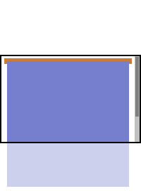
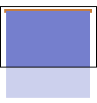

Another IE bug, where an AP-Box may not force a scrollbar even if the content is long enough to require one, resulting in hidden content.
The page content is contained within a box that is positioned relatively and has no assigned dimensions. Nested in this box are one (or more) absolutely positioned boxes. Take a quick look at this graphic showing how it should work.
 The Absolute Box should appear to start from inside the relative box, meaning the top of the AP box is calculated from the top of the relative box, not from the top of the document. But the relative box will not truly "contain" the absolute box because absolute boxes are not "inside" other elements. Instead, the AP box is on a higher z-index level (closer to the viewer), so the AP "child" box is free to become larger than its relative "parent" box. In the graphic to the right, the small red box is the relative box. The Absolute Box (blue) starts from the relative box, but is not "contained" by it. The scrollbar must be shown, so that the user can scroll down to the entire absolute box even though it occupies no real "space" in other elements.
 Internet Explorer does not think so. IE thinks the relative box really does contain the absolute box.
IE tries to make the relative "parent" element as big as the AP-Box that is "inside" it. But somehow IE can only make it as tall as the viewport. What happens then is that IE seems to "forget" what goes below the viewport and because of this, IE will limit the scrollbar. Sometimes the scrollbar will not appear at all. With the scrollbar limited, the user will be unable to scroll to the bottom of the AP-Box, resulting in hidden content.
This bug affects IE5, 5.5 and 6 for Windows. IE6 is buggy even when it is in "Standards Mode". While a dimension on the relative box will prevent the bug, a dimension on the nested absolute box will not fix the bug.
Sometimes it's bad for the layout when there is a dimension on the Relative box, but don't panic! We have a quick and working fix for this, that won't hurt the layout at all.
The good (and not so old) Holly Hack
can help you get rid of it. Just apply a height:1% to the
"relatively" positioned box and your content will scroll fine, as if nothing was
wrong. Read This article
for details on the Holly hack.
Here is the code used to fix the bug in this demo:
/* Start hide from IE-Mac \*/
* html #wrapper
{
height: 1%;
}
/* End Hide from IE-Mac */
If you want to see what happens when the fix is not applied to such a page, you can do it right here. This page is constructed with a "relative" box that encloses an AP box, which then encloses all the other page elements. The relative div#wrapper has been "fixed" as described above, and clicking this unfix button will remove the fix from the page via a simple JavaScript. To restore the missing content and reapply the fix, just reload the page. Remember that JavaScript is used to unfix the page, but it has nothing to do with the bug.
May 25 2004, Altieres Rohr.
Updated 19/April/2010.